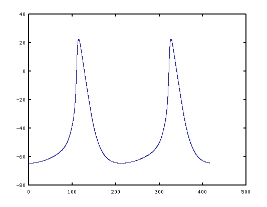
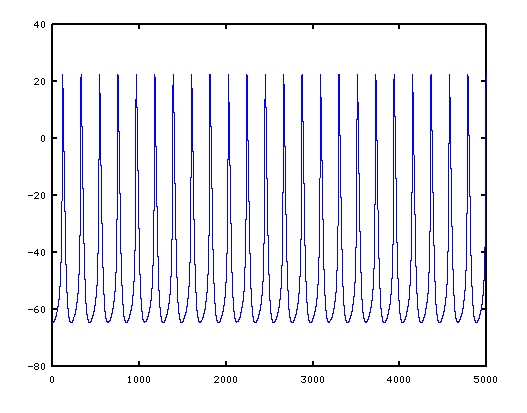

This is the readme for the model associated with the paper: Kharche S, Yu J, Lei M, Zhang H (2011) A mathematical model of action potentials of mouse sinoatrial node cells with molecular bases. Am J Physiol Heart Circ Physiol 301:H945-63 These model files were contributed by Sanjay Kharche Use: This is a standard C program that should work with most compilers. To compile with linux type gcc -lm Kharche_SAN.c to run type: ./a.out > stdout.txt The program will write a voltage trajectory, mousesan.dat, simulating the mouse SAN cells. This trajectory contains (the start of the file) waveforms similar to the figure 2A:  and (the whole file) figure 3B in the paper: 